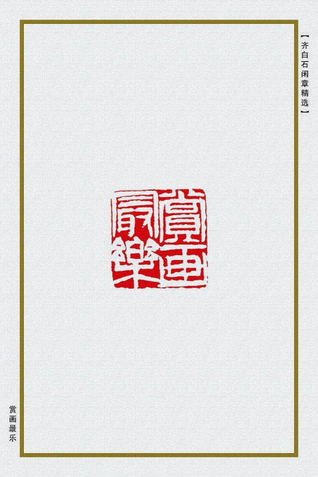
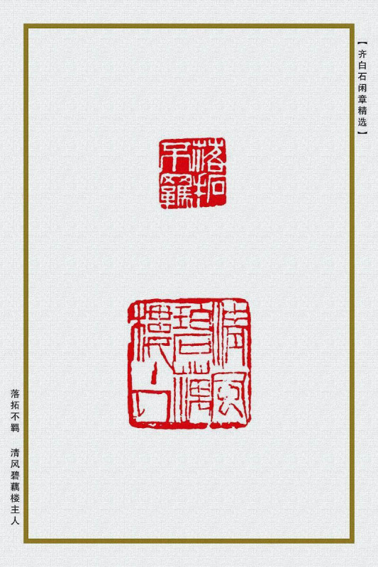
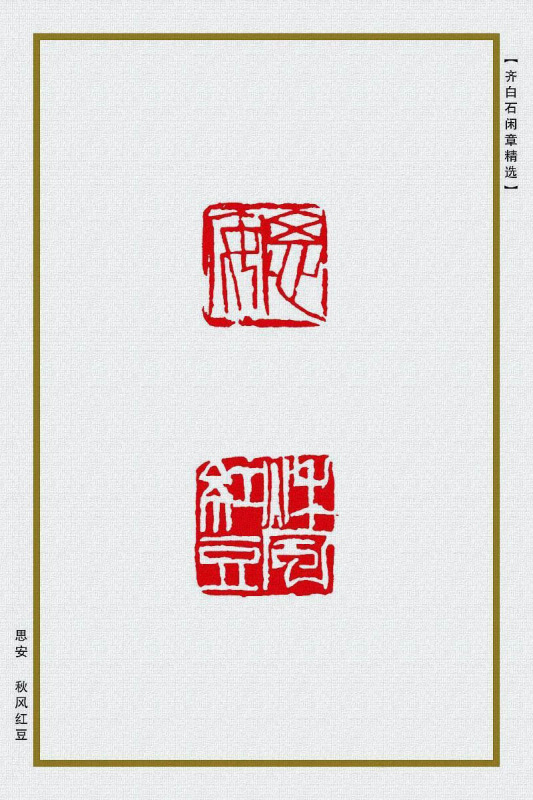
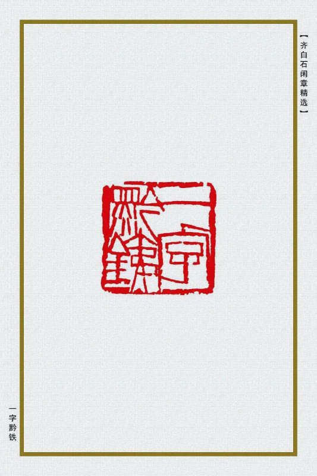

齐白石篆刻初学浙派的丁敬、黄易，后学赵之谦、吴昌硕。从汉《祀三公山碑》得到启发，改圆笔的篆书为方笔；从《天发神谶碑》得到启发，形成了大刀阔斧的单刀刻法；又从秦权量、诏版、汉将军印、魏晋多字官印等得到启发，形成纵横平直，不加修饰的印风。齐白石篆刻不断取法、变革，六十岁以后树立了属于自己的大刀阔斧、单刀直人、雄强刚健的风格。白石老人将汉印中平正方实，转折圆而结体方的构图特点加以变化，使一字之内，外形方正，而笔意疏密参差变化生动，穿插自然而恣肆纵横，使章法在强烈的对比中得到统一。他还将篆书上密下疏的特点移人印章，大胆变革而不失法度。齐白石治印，强调不削不作，绝摹仿，恶整理，主张率真自然。所谓刻字解义，就是应懂得刻字的根本道理和基本要求，要充分发挥镌刻的作用。反对“摹”、“作”、“削”，就是反对机械摹仿，矫揉造作，细削修刮。齐白石主张的“快剑断蛟”、“昆刀截玉”也是这个意思。他用刀有两个很大的特点：其一是单刀侧锋直人，使刻出的线条，一面光洁一面毛燥，呈现出纵横之气，尤其大印，气势雄健，有雷舞万钧之势。其二是正刀与侧刀混合交错使用，使单刀的线条又呈现出千变万化的面目。齐白石奏刀痛快，强悍凌历，但不是随心所欲，而是依循严谨的章法。启功先生在《记齐白石先生铁事》中曾谈到他亲眼看到齐白石刻印的经过：先就印文查字书，把字写在印石上。再用小镜子审视后精心修改，最后奏刀。强调刀法的重要性，也是齐白石对弟子的一贯教导：“刻印主要在配合篆字的章法，要使字个个舒展自然，气势纵横，但是千万不要故意使宇仰头仲脚，造作称奇，那就索然无味了。”由此可见白石老人的艺术修养和创作风格。
在艺术见解上最推崇“独造”，并且身体力行，曾说：“刻印，其篆法别有天趣胜人者，唯秦汉人。秦汉人有过人处在不蠢，胆敢独造，故能超出千古。余刻印不拘古人绳墨，而时俗以为无所本，余尝哀时人之蠢，不思秦汉人，人子也，吾亦人子也，不思吾有独到处，如今昔人见之，亦必钦仰。”齐白石篆刻章法强调疏密，空间分割大起大落，单刀切石，大刀阔斧，横冲斜插，猛利狂悍，痛快淋漓，创造出一种“写意篆刻”的独特风格。有《白石诗草》、《白石印草》、《齐白石作品选集》、《齐白石作品集》等传世。
二十经沧海
墨池清兴
杏语馆主
霞中厂 毅斋
借山门客
百树梨花主人

夺得天工
书画癖 古人风
吾画遍行天下伪造居多
品外 南皮张氏柳风堂石墨
知白守黑 何要浮名
有精神有事业 吉祥
铁夫珍藏
白石曾见 白石门下
微风闲坐古松 简斋
寂寞之道
高楼风雨感斯文
不可居无竹 不贪为宝

前世打钟僧
静观 貌为奇石
浮名过实

赏画最乐
犹有梅花是故人
吾心自有乐
接木移花手段
莲花山下是吾家
隔花人远天涯近
难如人意一生惭
风前月下清吟
视道如花
乐石室 乐此不疲
吾不丑穷 闲云野鹤
湘潭人也
一年容易又秋风 一夜吹香过石桥
鹧鸪啼处百花飞

落拓不羁 清风碧藕楼主人
雕虫小技家声
杏花春雨江南 志和藏书
翠云长年 醉白
千石印室 大匠之门
太平无事不忘君恩
患难见交情
天涯亭过客
江南布衣
叔度读书 知足胜不详
蒙泉金石文字 墨缘长寿
名花梦里相看 行之苟有恒
见贤思齐

思安 秋风红豆
连山好竹人家
谢氏吉金乐石 谦则吉恭则寿

寄萍堂
大器斋

一字黔铁
流俗之所轻也
一息尚存书要读
韫山长寿
中立不倚
西山风日思君
淡泊宁静 清白家风
白石篆字 西山如笑笑我邪
白云青霞草堂
吟诗一夜东方白
家在清风雅雨间
淡静斋